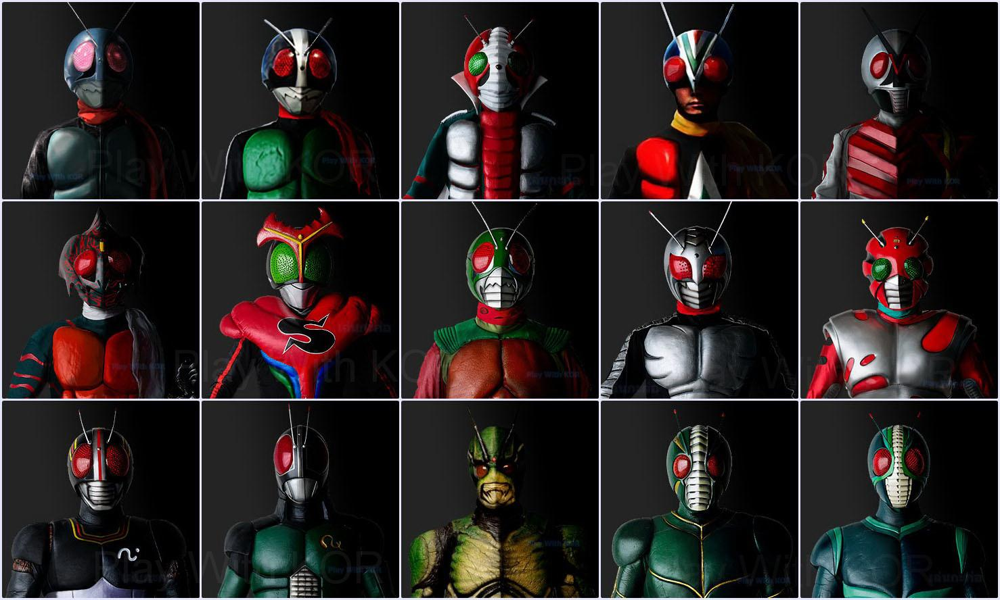
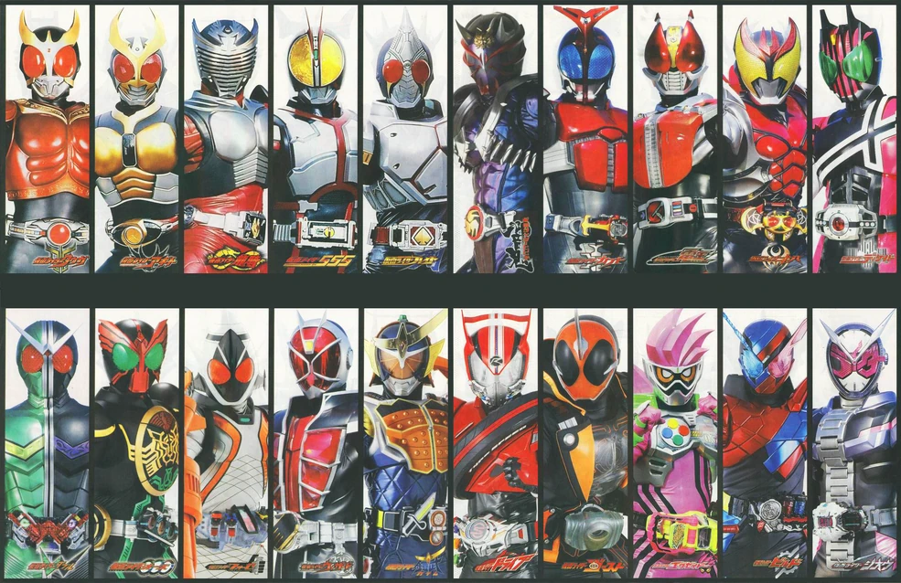
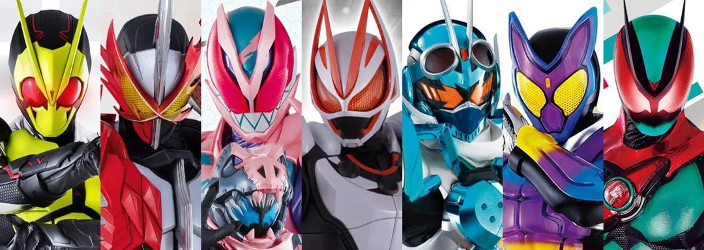

Showa

A Série Showa Kamen Rider (昭和仮面ライダーシリーズ, Shōwa Kamen Raidā Shirīzu ) é a primeira das três eras de produção atuais da Série Kamen Rider . Refere-se ao período Showa (昭和時代, Shōwa Jidai ) , também conhecido como era Showa , o período da história japonesa correspondente ao reinado do imperador Shōwa, Hirohito, de 25 de dezembro de 1926 a 7 de janeiro de 1989, e o período em que ocorreu a maioria das produções de Showa Rider. A série Kamen Rider começou em meados da era Showa, aproximadamente 28 anos após o fim da Segunda Guerra Mundial e o início do que é conhecido como Japão pós-guerra. A era Showa terminou em 1989, durante a exibição de Kamen Rider Black RX, pouco depois da transmissão do episódio 10 , com a morte do Imperador Hirohito. A série teve uma pausa de uma semana para homenagear a vida do falecido imperador antes de retornar ao ar com o episódio 11 . Completamente ausente da televisão durante a década de 1990, a franquia Kamen Rider se manteve viva principalmente por meio de shows ao vivo, CDs musicais e os filmes Shin , ZO e J , embora muitos fãs classifiquem os episódios 11 a 47 de Black RX , Run All Over the World e os filmes da década de 1990 como parte da era Showa, considerando o falecimento de Shotaro Ishinomori em 1998 como o verdadeiro fim da franquia. A partir do filme Saber + Zenkaiger: Superhero Senki , a Toei adotou e reconheceu essa mesma classificação para os filmes da década de 1990 em respeito a Ishinomori e aos fãs de longa data da franquia.
Heisei

A Série Heisei Kamen Rider (平成仮面ライダーシリーズ, Heisei Kamen Raidā Shirīzu ) é a segunda era de produção da Série Kamen Rider . Refere-se ao período HeiseiÍcone-wikipedia (平成時代, Heisei Jidai ) , um período da história japonesa definido pelo reinado do imperador Akihito. Tudo começou em 8 de janeiro de 1989 – um dia após a morte de seu pai, o imperador Hirohito – e terminou com a abdicação de Akihito em 30 de abril de 2019. Essa abdicação foi anunciada publicamente em agosto de 2016, permitindo que tanto o público japonês quanto a mídia antecipassem o fim exato da era. De acordo com os costumes japoneses, Akihito será postumamente conhecido como “Imperador Heisei”.A série Kamen Rider foi devidamente revivida na Era Heisei, começando com Kamen Rider Kuuga em 2000, como observado em Kamen Rider Decade (2009), a décima série da Era Heisei que inicialmente uniu as nove primeiras séries Heisei, também dando foco ao período Showa devido à posição de Decade como o 25º Kamen Rider (apesar de, a essa altura, terem se passado apenas 38 anos desde o Kamen Rider original . A explicação seria que Decade funciona como uma série comemorativa para toda a franquia, marcada pelo marco de ser a décima série Heisei).
Reiwa

A Reiwa Kamen Rider Series (令和仮面ライダーシリーズ, Reiwa Kamen Raidā Shirīzu ) é a terceira e atual era de produção da Kamen Rider Series , em homenagem à era Reiwa (令和時代, Reiwa Jidai ) no Japão, que começou após a abdicação do imperador reinante. Akihito para seu filho Naruhito , que ascendeu ao trono em 1º de maio de 2019. De acordo com os costumes japoneses, Akihito será renomeado como "Imperador Heisei" após sua morte.